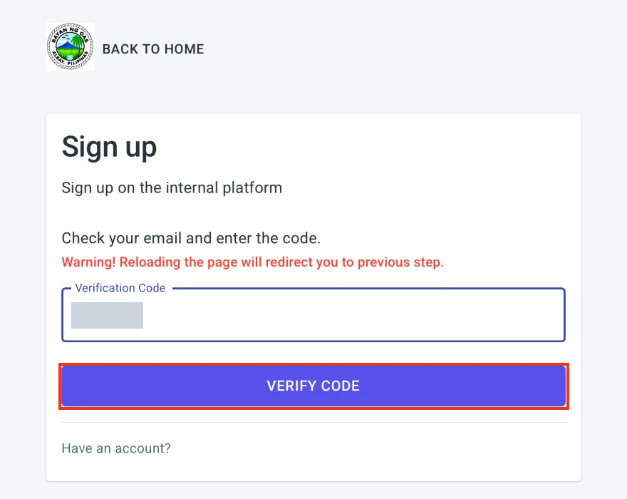

This section shows how an applicant creates an account, verifies the email address and signs in to the Building Permit and Certificate of Occupancy System (BPCOS).
Go to bpcos.oas.lguapp.com, or click the Building Permit & Certificate of Occupancy card on the OAS home page. The sign in page opens. See Section 1 for the parts of the page.
An applicant needs an account before applying for a permit. The account is created from the sign in page and confirmed with a code sent to the email address.
On the sign in page, click Create new account below the Log In button.
After you submit the form, the Sign up page asks for a verification code. The system sends the code to your email address. The page reminds you: Warning! Reloading the page will redirect you to previous step. Do not reload the page while you wait for the code.

Type the code in the Verification Code box and click Verify Code. If you already have an account, click Have an account? to go back to the sign in page.

The message Registration completed! appears at the bottom left of the sign in page. You can now sign in with your email address and password.
Click Forget password? on the sign in page to recover your account.